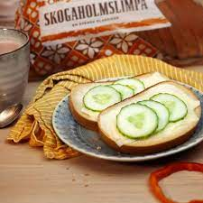

Skogaholmsmacka

Description
Ingredients:
- 1 piece of Skogaholms bread
- Butter
- Cheese
- (Optional) Cucumber
Steps
- Place bread on flat surface or the palm of your hand.
- Spread a thin, even layer of butter on the bread.
- Add 1-2 slices of cheese.
- If it's a special occasion, add 2-4 thin slices of cucumber on top of the cheese.